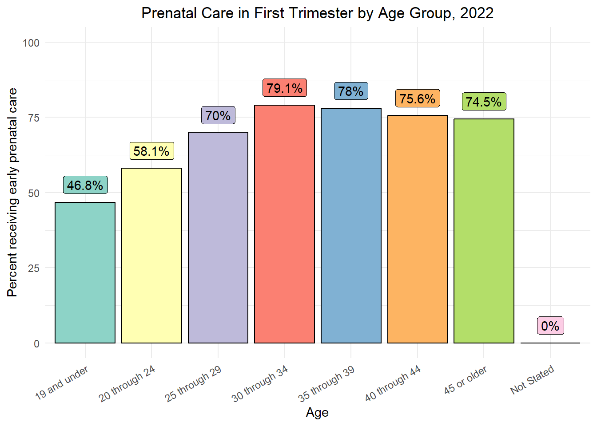
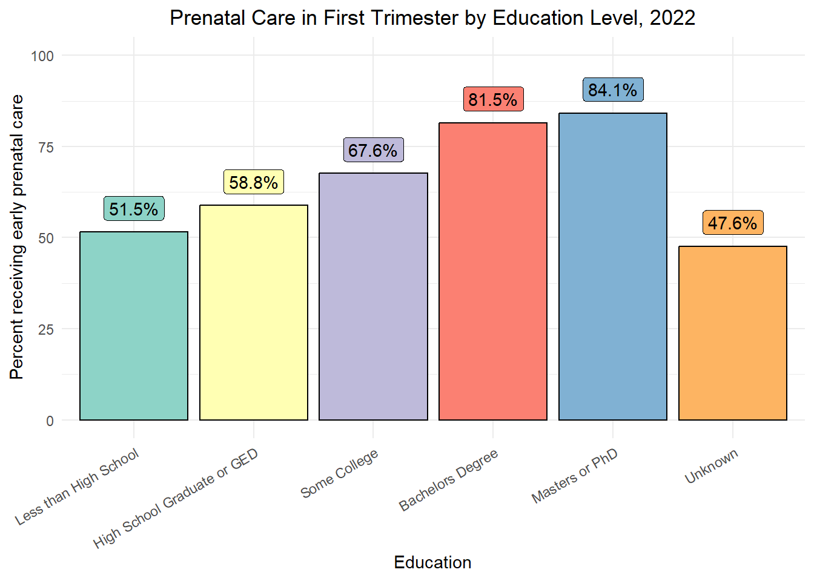
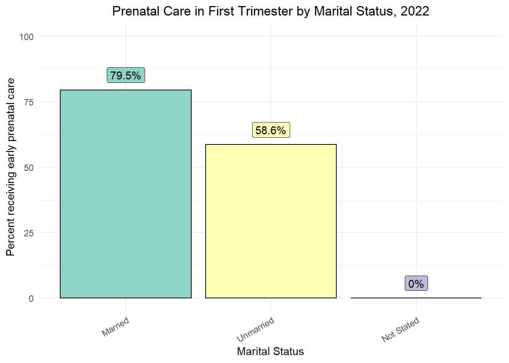
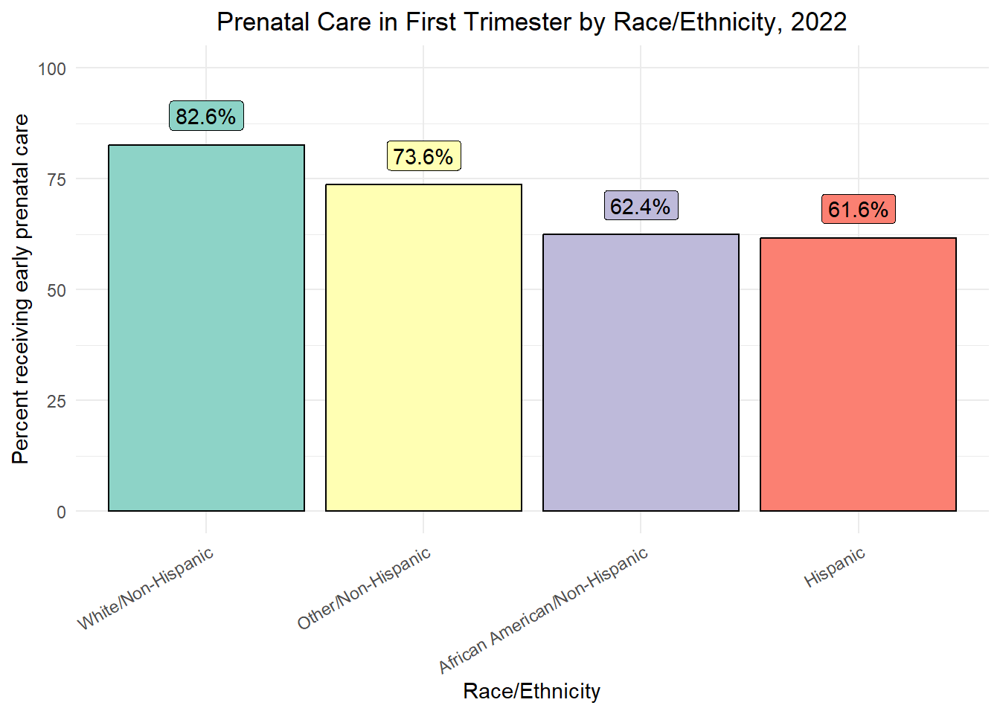
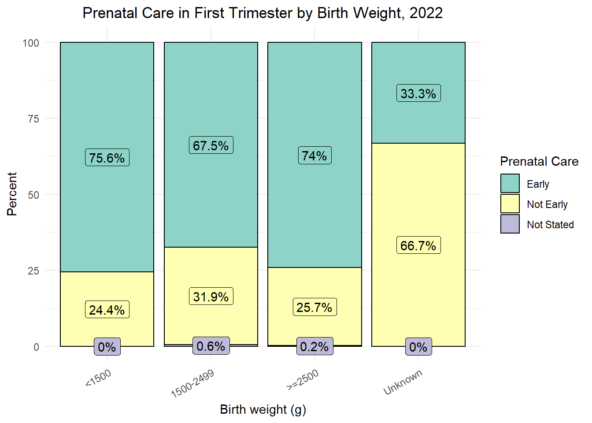

Section 2 2024 MCH Report
WCHHS publishes an annual Maternal and Child Health Report, which provides information about maternal and child demographics, risk factors, morbidity, and mortality to the Wake County public, healthcare providers, and internal WCHHS programs.
For this report, I contributed a bit of data analysis with graphics. The graphics and all data management was done in R, and the code is shown below.
We will start by going through the import.R script, then look through the graph-generating R Markdown file. Unlike Section 1 (which relies partially on confidential data), this section was rendered with the actual data and outputs are shown as examples. The data used in this section is from the North Carolina BabyBook.1
2.1 Libraries
There are three non-standard libraries used in this script.
tidyverse: The tidyverse is a set of packages with a common syntax and philosophy. It includes many useful packages, such asdplyr(which provides many data management functions) andggplot2(which is used to create all graphics in this presentation).readxl: This package provides functions that read Microsoft Excel files.readr: This package is useful for customizing how you read .csv files.
2.2 Transposing data
For the analysis below, it is helpful to have a way to transpose (flip the rows and columns of) data. For this script, I wrote sesh_transpose(), which transposes the data in a more consistent and useful way than R’s default t() function. Outside of the practicum, I later edited and added onto sesh_transpose() and published it in my ezepi package as ezt(), which I recommend using instead of copying this code. For this script, sesh_transpose() is sufficient.
## transposing function
sesh_transpose <- function(x, row_name){
counter <- nrow(x)
name <- as.character(counter)
df <- tibble({{name}} := slice(x, {{counter}}) %>%
unlist() %>%
as.vector())
counter <- counter - 1
repeat{
if(counter == 0){
break
} else {
name <- as.character(counter)
df <- add_column(
df,
{{name}} := slice(x, {{counter}}) %>%
unlist() %>%
as.vector(),
.before = 1
)
counter <- counter - 1
}
}
df <- df %>%
setNames(slice(df, 1)) %>%
slice(-1) %>%
mutate(across(everything(), as.numeric)) %>%
add_column(
{{row_name}} := names(x)[-1],
.before = 1
)
return(df)
}Because ezt() is publicly available, I will not explain this function in too much detail. Briefly, this function:
- Sets a counter variable based on the number of rows in the dataset.
- Sets the first column name to be generated to the counter variable.
- Creates a dataset with one column, which is the bottom row of the original dataset.
- Decreases the counter by one.
- Starts a loop that grabs the last row of the remaining dataset, converts it to a column in the new dataset, and decreases the counter by one until the counter is zero.
- Sets the first row of the new dataset as the column headers, then removes the first row.
- Adds the column headers from the original dataset as the first column of the new dataset.
If this function would be useful to you, I suggest installing and exploring ezepi. Instructions for installation and use can be found in the bottom section of the ezepi homepage. You can also use t(), which is included in base R.
2.3 Importing data
Now, we need to import data from an Excel workbook, which was manually copied from certain BabyBook tables. We can do this using the readxl package:
## import data from Tables.xlsx
pncxedu <- read_xlsx("Tables.xlsx", sheet = "table-5")
pncxage <- read_xlsx("Tables.xlsx", sheet = "table-6") %>%
sesh_transpose("Month Prenatal Care Began")
pncxmarital <- read_xlsx("Tables.xlsx", sheet = "table-7")
pncxrace <- read_xlsx("Tables.xlsx", sheet = "race-table")
pncxbirthweight <- read_xlsx("Tables.xlsx", sheet = "table-9")Notice that we transpose the table with prenatal care by age. That is because, unlike the other tables, Age is along the table’s y-axis, while month prenatal care began is along the x-axis. sesh_transpose() flips these axes, and "Month Prenatal Care Began" is included as an argument to set the header for the first column, which will no longer be the maternal age.
2.4 Cleaning and combining data
2.4.1 Prenatal care initiation by maternal age
First, we deal with pncxage: the month prenatal care began stratified by maternal age.
age <- pncxage %>%
mutate("19 and under" = rowSums(select(., `14`, `15`, `16`, `17`, `18`, `19`)),
"20 through 24" = rowSums(select(., `20`, `21`, `22`, `23`, `24`)),
.before = 2) %>%
sesh_transpose("Age") %>%
mutate("Early" = rowSums(select(., `First`, `Second`, `Third`)),
"Not Early" = rowSums(select(., `Fourth`, `Fifth`, `Sixth`, `Seventh`, `Eighth`,
`Ninth`, `None`)),
.before = 2) %>%
select(Age, Early, `Not Early`, `Not Stated`) %>%
slice(1, 2, 14:19) %>%
mutate("Total" = rowSums(across(where(is.numeric))),
"Risk" = Early/Total)This block of code performs the following tasks:
- Mutate (create) a column for births where the mother was 19 years old or under by summing the counts for age 14-19 and a column for births where the mother was 20 through 24 by summing those counts.
- Transpose the dataset again, so maternal age is now on the y-axis and month prenatal care began is on the x-axis.
- Mutate (create) a column for early prenatal care (initiated in the first trimester) and a column for not early (initiated after the first trimester or not initiated), summing the respective month columns.
- Select just the maternal age, early and not early counts, and not stated columns, removing the columns with individual months when prenatal care was initiated.
- Slice (select by their number) the rows with the age groupings of interest.
- Mutate (create) a Total and Risk column for early prenatal care initiation.
The output of this code is shown below.
| Age | Early | Not Early | Not Stated | Total | Risk |
|---|---|---|---|---|---|
| 19 and under | 144 | 164 | 0 | 308 | 0.4675325 |
| 20 through 24 | 806 | 571 | 10 | 1387 | 0.5811103 |
| 25 through 29 | 2158 | 917 | 10 | 3085 | 0.6995138 |
| 30 through 34 | 3942 | 1033 | 6 | 4981 | 0.7914073 |
| 35 through 39 | 2172 | 607 | 7 | 2786 | 0.7796123 |
| 40 through 44 | 450 | 145 | 0 | 595 | 0.7563025 |
| 45 or older | 35 | 12 | 0 | 47 | 0.7446809 |
| Not Stated | 0 | 1 | 0 | 1 | 0.0000000 |
2.4.2 Prenatal care initiation by maternal education
Next, we deal with pncxedu. This is performed very similarly to maternal age, but with slightly fewer steps.
edu <- pncxedu %>%
sesh_transpose("Education") %>%
mutate("Early" = rowSums(select(., `First`, `Second`, `Third`)),
"Not Early" = rowSums(select(., `Fourth`, `Fifth`, `Sixth`, `Seventh`, `Eighth`,
`Ninth`, `None`)),
.before = 2) %>%
select(Education, Early, `Not Early`, `Not Stated`) %>%
mutate("Total" = rowSums(across(where(is.numeric))),
"Risk" = Early/Total)For education, we do not need to define new categories for education level and remove extraneous ones, so this function is simpler. The output is shown below:
| Education | Early | Not Early | Not Stated | Total | Risk |
|---|---|---|---|---|---|
| Less than High School | 582 | 547 | 2 | 1131 | 0.5145889 |
| High School Graduate or GED | 1019 | 701 | 12 | 1732 | 0.5883372 |
| Some College | 1782 | 847 | 8 | 2637 | 0.6757679 |
| Bachelors Degree | 3581 | 804 | 7 | 4392 | 0.8153461 |
| Masters or PhD | 2704 | 508 | 4 | 3216 | 0.8407960 |
| Unknown | 39 | 43 | 0 | 82 | 0.4756098 |
2.4.3 Prenatal care initiation by marital status
Next is pncxmarital. Like pncxedu, this is much simpler. Here is the code:
marital <- pncxmarital %>%
sesh_transpose("Marital Status") %>%
mutate("Early" = rowSums(select(., `First`, `Second`, `Third`)),
"Not Early" = rowSums(select(., `Fourth`, `Fifth`, `Sixth`, `Seventh`, `Eighth`,
`Ninth`, `None`)),
.before = 2) %>%
select(`Marital Status`, Early, `Not Early`, `Not Stated`) %>%
mutate("Total" = rowSums(across(where(is.numeric))),
"Risk" = Early/Total)And the output:
| Marital Status | Early | Not Early | Not Stated | Total | Risk |
|---|---|---|---|---|---|
| Married | 7522 | 1917 | 19 | 9458 | 0.7953056 |
| Unmarried | 2185 | 1529 | 14 | 3728 | 0.5861052 |
| Not Stated | 0 | 4 | 0 | 4 | 0.0000000 |
2.4.4 Prenatal care initiation by maternal race and ethnicity
Now, we do pncxrace. Here is the code:
race <- pncxrace %>%
sesh_transpose("Race/Ethnicity") %>%
mutate("Early" = rowSums(select(., `First`, `Second`, `Third`)),
"Not Early" = rowSums(select(., `Fourth`, `Fifth`, `Sixth`, `Seventh`, `Eighth`,
`Ninth`, `None`)),
.before = 2) %>%
select(`Race/Ethnicity`, Early, `Not Early`, `Not Stated`) %>%
mutate("Total" = rowSums(across(where(is.numeric))),
"Risk" = Early/Total)And the output:
| Race/Ethnicity | Early | Not Early | Not Stated | Total | Risk |
|---|---|---|---|---|---|
| White/Non-Hispanic | 5349 | 1118 | 11 | 6478 | 0.8257178 |
| African American/Non-Hispanic | 1634 | 980 | 6 | 2620 | 0.6236641 |
| Other/Non-Hispanic | 1254 | 445 | 5 | 1704 | 0.7359155 |
| Hispanic | 1470 | 907 | 11 | 2388 | 0.6155779 |
2.4.5 Birthweight by prenatal care initiation
Last, we do something a bit different: we look at birthweight (in three categories) by prenatal care initiation. Here is the code:
birthweight <- pncxbirthweight %>%
sesh_transpose("Birth weight (g)") %>%
mutate("Early" = rowSums(select(., `First`, `Second`, `Third`)),
"Not Early" = rowSums(select(., `Fourth`, `Fifth`, `Sixth`, `Seventh`, `Eighth`,
`Ninth`, `None`)),
.before = 2) %>%
select(`Birth weight (g)`, Early, `Not Early`, `Not Stated`) %>%
mutate("Total" = rowSums(across(where(is.numeric))),
"Early" = Early/Total,
"Not Early" = `Not Early`/Total,
"Not Stated" = `Not Stated`/Total) %>%
select(!Total) %>%
pivot_longer(
cols = where(is.numeric),
names_to = "Prenatal Care",
values_to = "Values"
)Here is the output:
| Birth weight (g) | Prenatal Care | Values |
|---|---|---|
| <1500 | Early | 0.7555556 |
| <1500 | Not Early | 0.2444444 |
| <1500 | Not Stated | 0.0000000 |
| 1500-2499 | Early | 0.6747685 |
| 1500-2499 | Not Early | 0.3194444 |
| 1500-2499 | Not Stated | 0.0057870 |
| >=2500 | Early | 0.7401977 |
| >=2500 | Not Early | 0.2574959 |
| >=2500 | Not Stated | 0.0023064 |
| Unknown | Early | 0.3333333 |
| Unknown | Not Early | 0.6666667 |
| Unknown | Not Stated | 0.0000000 |
This table appears different because it was pivoted: the prenatal care column names were turned into values of a new Prenatal care column, and the table was given more rows to accommodate the switch. This is useful for the specific kind of graph (a stacked bar graph) we will make with the birthweight data in a moment.
2.6 Graphing data
Now, we move on to graphing. These tasks are done in bar-graphs.Rmd. We want to produce five graphs:
- Four bar graphs showing the percent of people initiating prenatal care in the first trimester at each age group, education level, marital status, and race/ethnicity group.
- One stacked bar graph showing the percent of births in each birthweight class receiving early prenatal care, non-early prenatal care, or not stated.
2.6.1 Prenatal care initiation by maternal age
# Read the age.csv dataset
read_csv("Tables/age.csv", show_col_types = FALSE) %>%
# Add a Risk column for the percent in each age group receiving early care
mutate(Risk = round(Risk * 100, 1)) %>%
# Initiate the graph, with Age on the x-axis and determining the bar color and Risk on the y-axis
ggplot(aes(x = Age, y = Risk, fill = Age)) +
# Make a column (bar) graph and add a black outline to the bars
geom_col(color = "black") +
# Add percent labels
geom_label(
aes(label = paste0(Risk, "%")), # Add percent to the end of the numeric value
vjust = -0.5 # Center the label
) +
# Change the y-axis label
ylab("Percent receiving early prenatal care") +
# Change the y-axis scale limits
ylim(0, 100) +
# Set the color scheme (use RColorBrewer color set 3)
scale_fill_brewer(palette = "Set3") +
# Set the overall ggplot theme
theme_minimal() +
# Set the plot title
ggtitle("Prenatal Care in First Trimester by Age Group, 2022") +
# Set specific theme elements
theme(axis.text.x = element_text(angle = 30, hjust = 1, vjust = 1), # Tilt the x-axis labels
plot.title = element_text(hjust = 0.5)) + # Center the plot title
# Remove the legend
guides(fill = "none")
See the code comments explaining this code above for details. The following three graphs are similar, so there are no code comments included with them.
2.6.2 Prenatal care initiation by maternal education
read_csv("Tables/edu.csv", show_col_types = FALSE) %>%
mutate(Risk = round(Risk * 100, 1)) %>%
mutate(Education = factor(
.$Education,
levels = c("Less than High School", "High School Graduate or GED",
"Some College", "Bachelors Degree", "Masters or PhD",
"Unknown")
)) %>%
ggplot(aes(x = Education, y = Risk, fill = Education)) +
geom_col(color = "black") +
geom_label(
aes(label = paste0(Risk, "%")),
vjust = -0.5
) +
ylab("Percent receiving early prenatal care") +
ylim(0, 100) +
scale_fill_brewer(palette = "Set3") +
theme_minimal() +
ggtitle("Prenatal Care in First Trimester by Education Level, 2022") +
theme(axis.text.x = element_text(angle = 30, hjust = 1, vjust = 1),
plot.title = element_text(hjust = 0.5)) +
guides(fill = "none")
Note one addition here: the Education variable is created as a factor, which allows the x-axis to be ordered logically. If the education variable were a character vector instead of a factor, the education levels would be alphabetized.
2.6.3 Prenatal care initiation by marital status
read_csv("Tables/marital.csv", show_col_types = FALSE) %>%
mutate(Risk = round(Risk * 100, 1)) %>%
mutate(`Marital Status` = factor(.$`Marital Status`,
levels = c("Married", "Unmarried", "Not Stated"))) %>%
ggplot(aes(x = `Marital Status`, y = Risk, fill = `Marital Status`)) +
geom_col(color = "black") +
geom_label(
aes(label = paste0(Risk, "%")),
vjust = -0.5
) +
ylab("Percent receiving early prenatal care") +
ylim(0, 100) +
scale_fill_brewer(palette = "Set3") +
theme_minimal() +
ggtitle("Prenatal Care in First Trimester by Marital Status, 2022") +
theme(axis.text.x = element_text(angle = 30, hjust = 1, vjust = 1),
plot.title = element_text(hjust = 0.5)) +
guides(fill = "none")
As with education status, marital status is changed to a factor so the x-axis is properly ordered.
2.6.4 Prenatal care initiation by race and ethnicity
read_csv("Tables/race.csv", show_col_types = FALSE) %>%
mutate(Risk = round(Risk * 100, 1)) %>%
mutate(`Race/Ethnicity` = factor(
.$`Race/Ethnicity`,
levels = c("White/Non-Hispanic", "Other/Non-Hispanic", "African American/Non-Hispanic",
"Hispanic")
)) %>%
ggplot(aes(x = `Race/Ethnicity`, y = Risk, fill = `Race/Ethnicity`)) +
geom_col(color = "black") +
geom_label(
aes(label = paste0(Risk, "%")),
vjust = -0.5
) +
ylab("Percent receiving early prenatal care") +
ylim(0, 100) +
scale_fill_brewer(palette = "Set3") +
theme_minimal() +
ggtitle("Prenatal Care in First Trimester by Race/Ethnicity, 2022") +
theme(axis.text.x = element_text(angle = 30, hjust = 1, vjust = 1),
plot.title = element_text(hjust = 0.5)) +
guides(fill = "none")
Once again, race/ethnicity is changed to a factor to preserve a logical x-axis: in this case, the order was chosen to show groups from highest early prenatal care uptake to lowest.
2.6.5 Birthweight by prenatal care initiation
For the final graph, we create a stacked bar graph. This is more useful in this case, because we can more easily show the effect of prenatal care initiation on birthweight.
# Read the birthweight.csv dataset
read_csv("Tables/birthweight.csv", show_col_types = FALSE) %>%
# Multiply the risks by 100 (to create percents) and round to the tenths place.
mutate(Values = round(Values * 100, 1)) %>%
# Change the birthweight variable to an ordered factor
mutate(`Birth weight (g)` = factor(
.$`Birth weight (g)`,
levels = c("<1500", "1500-2499", ">=2500", "Unknown")
)) %>%
# Initiate the graph, with birthweight on the x-axis and percent on the y-axis
ggplot(aes(x = `Birth weight (g)`, y = Values, fill = `Prenatal Care`)) +
# Create a column (bar) graph
geom_col(color = "black") +
# Add percent labels
geom_label(
aes(label = paste0(Values, "%")), # Add percent to the end of the numeric value
position = position_stack(vjust = 0.5), # Center the labels and stack them like the bars
show.legend = FALSE # Remove the labels from the legend
) +
# Set the y-axis label
ylab("Percent") +
# Set the y-axis limits
ylim(0, 100) +
# Set the color scheme (to RColorBrewer's color set 3)
scale_fill_brewer(palette = "Set3") +
# Set the ggplot theme
theme_minimal() +
# Set the plot title
ggtitle("Prenatal Care in First Trimester by Birth Weight, 2022") +
# Change theme settings
theme(axis.text.x = element_text(angle = 30, hjust = 1, vjust = 1), # Angle the x-axis labels
plot.title = element_text(hjust = 0.5), # Center the plot title
legend.position = "right") # Position the legend
See the code comments explaining this code above for details.
2.7 Calculating risk ratios for early prenatal care
In this section, we generate tables that show risk ratios for each category graphed above. The ratios calculated here say how many times as likely a member of each group was to obtain early prenatal care (initiated in the first trimester) compared to the group overall.
First, we need to load some additional libraries:
knitris used to “knit” (render) RMarkdown files. In addition tobar-graphs.Rmd, this presentation was generated withknitr.kableExtrais used to style tables generated withkable(), which is a function fromknitr. The tables in the sections above were kables styled withkableExtra.
2.7.1 Risk of prenatal care initiation by maternal age
We need to calculate a risk ratio here. As a reminder, risk ratios are calculated as \(\frac{a/(a+b)}{c/(c+d)}\), where:
- \(a\) are those with the outcome who were exposed.
- \(b\) are those without the outcome who were exposed.
- \(c\) are those with the outcome who were not exposed.
- \(d\) are those without the outcome who were not exposed.
In this case, we will calculate the risk of each category over the overall population’s risk for the risk ratio. The following code demonstrates how this is done:
# Read the age.csv dataset
read_csv("Tables/age.csv", show_col_types = FALSE) %>%
# Remove the existing Risk column
select(!Risk) %>%
# Generate a totals row which sums all births with early care, no early care, and not stated
bind_rows(
summarise_all(., ~if(is.numeric(.)) sum(.) else "Total")
) %>%
# Calculate risk again
mutate(
"Risk" = Early / Total
) %>%
# Calculate a risk ratio by dividing each row's risk by the risk in the Total row
mutate(
"RR" = Risk / filter(., Age == "Total") %>% pull(Risk)
) %>%
# Select only the needed columns
select(Age, Total, RR) %>%
# Generate a table
kable("html") %>%
kable_material("striped")| Age | Total | RR |
|---|---|---|
| 19 and under | 308 | 0.6352893 |
| 20 through 24 | 1387 | 0.7896204 |
| 25 through 29 | 3085 | 0.9505086 |
| 30 through 34 | 4981 | 1.0753748 |
| 35 through 39 | 2786 | 1.0593476 |
| 40 through 44 | 595 | 1.0276739 |
| 45 or older | 47 | 1.0118822 |
| Not Stated | 1 | 0.0000000 |
| Total | 13190 | 1.0000000 |
Note: the code used to generate the tables is different in this presentation for design consistency. You can refer to bar-graphs.Rmd for the style commands used there.
The next three tables are generated the same way, so code comments are not given.
2.7.2 Risk of prenatal care initiation by maternal education
read_csv("Tables/edu.csv", show_col_types = FALSE) %>%
select(!Risk) %>%
bind_rows(
summarise_all(., ~if(is.numeric(.)) sum(.) else "Total")
) %>%
mutate(
"Risk" = Early / Total
) %>%
mutate(
"RR" = Risk / filter(., Education == "Total") %>% pull(Risk)
) %>%
select(Education, Total, RR) %>%
kable("html") %>%
kable_material("striped")| Education | Total | RR |
|---|---|---|
| Less than High School | 1131 | 0.6992301 |
| High School Graduate or GED | 1732 | 0.7994403 |
| Some College | 2637 | 0.9182424 |
| Bachelors Degree | 4392 | 1.1079030 |
| Masters or PhD | 3216 | 1.1424848 |
| Unknown | 82 | 0.6462648 |
| Total | 13190 | 1.0000000 |
2.7.3 Risk of prenatal care initiation by marital status
read_csv("Tables/marital.csv", show_col_types = FALSE) %>%
select(!Risk) %>%
bind_rows(
summarise_all(., ~if(is.numeric(.)) sum(.) else "Total")
) %>%
mutate(
"Risk" = Early / Total
) %>%
mutate(
"RR" = Risk / filter(., `Marital Status` == "Total") %>% pull(Risk)
) %>%
select(`Marital Status`, Total, RR) %>%
kable("html") %>%
kable_material("striped")| Marital Status | Total | RR |
|---|---|---|
| Married | 9458 | 1.0806717 |
| Unmarried | 3728 | 0.7964074 |
| Not Stated | 4 | 0.0000000 |
| Total | 13190 | 1.0000000 |
2.7.4 Risk of prenatal care initiation by race and ethnicity
read_csv("Tables/race.csv", show_col_types = FALSE) %>%
select(!Risk) %>%
bind_rows(
summarise_all(., ~if(is.numeric(.)) sum(.) else "Total")
) %>%
mutate(
"Risk" = Early / Total
) %>%
mutate(
"RR" = Risk / filter(., `Race/Ethnicity` == "Total") %>% pull(Risk)
) %>%
select(`Race/Ethnicity`, Total, RR) %>%
kable("html") %>%
kable_material("striped")| Race/Ethnicity | Total | RR |
|---|---|---|
| White/Non-Hispanic | 6478 | 1.1219963 |
| African American/Non-Hispanic | 2620 | 0.8474431 |
| Other/Non-Hispanic | 1704 | 0.9999717 |
| Hispanic | 2388 | 0.8364554 |
| Total | 13190 | 1.0000000 |